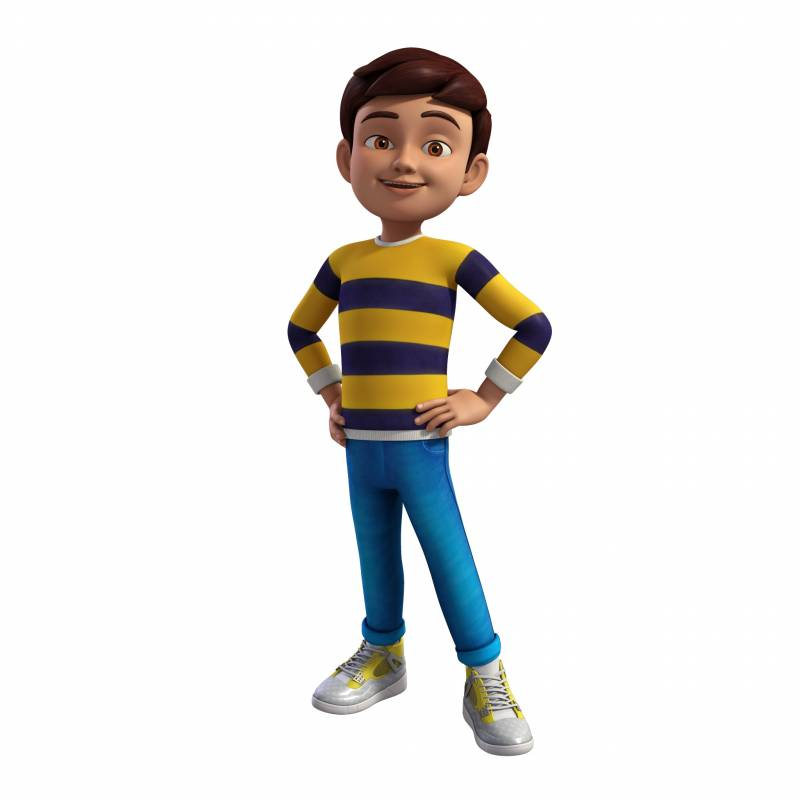

I love to watching televions . And my favourite cartoon character is doraemon.I like all characters in doraemon cartoon but my favourite is only doraemon because he is soo cute and always help nobita when he is in any trouble..
His all series are too interesting full of fun , adventure and enjoyment. I like his all new movies...And he has a real story also . His gadgets are to cool . Sometimes I wish that I have also doraemon and his gadgets . He is so smart ..
At last but not the least I want to say that cartoons are just for entertainment only they are not real ...

This is Shin Chane pic . I also like this cartoon..
